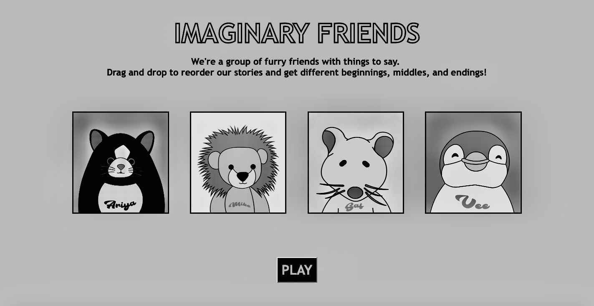

Home
About
30MFF
Comic Strip
Sound
Video
Sound

Imaginary Friends
A collection of childhood memories told from the perspective of toys,
in which the audience has control over narrative by mixing and
matching four different stories (creating a total of 24 possible variations).